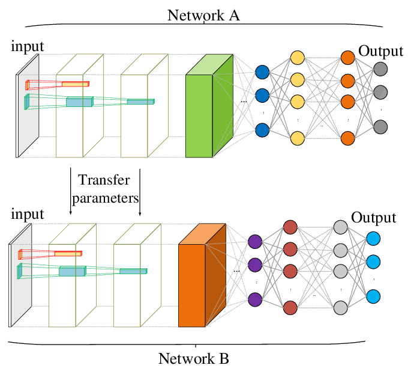
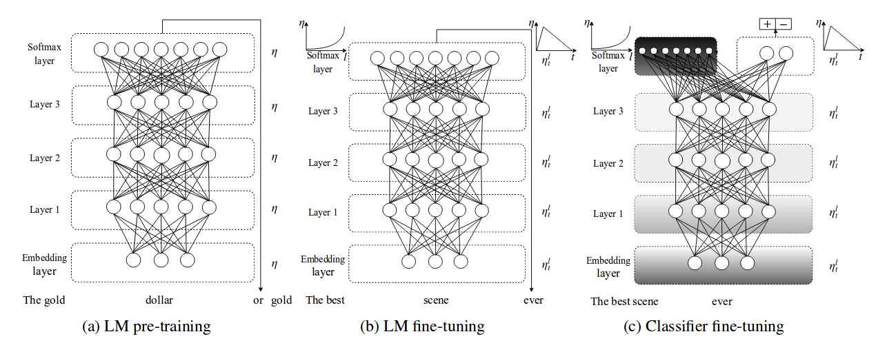
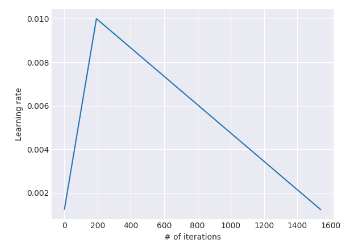
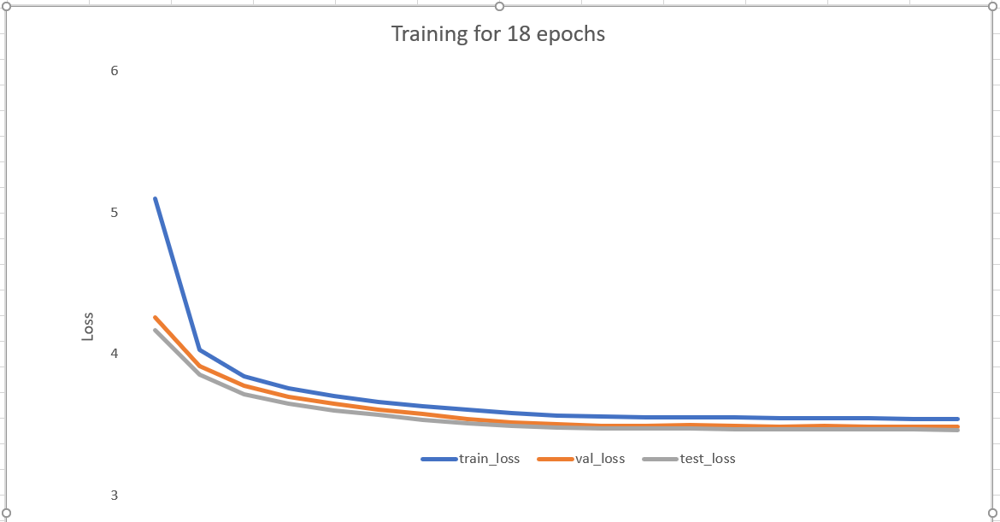
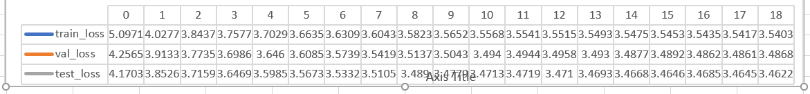

A new state of the art for text classification (April 2018)
Transfer learning is definitly a new concept for NLP, and it should be done with caution. In this blog post, we will investigate on the theorie behind it, and then we will pretrain our own model from the wiki103 dataset
Transfer Learning is a technique widely used in computer vision.
It constists in using a pretrained neural network on
a similar task, and then training the last layers on our final task.
For instance, we can use a convolutional neural network (Network A) trained to classify 1000
different types of images (cat, iris, aircraft, vehicules,...) and transfer some of his parameters to a network B
before we train B on a more specific task, such as iceberg recognition.

This technique makes a lot of sense:
even if the last layers are different from network A to network B,
it would be very useful for our network B to reuse
the first layers of network A to capture low level features
such as edges and basic shapes. We can keep the first layers of our network A
and train only the last fully connected layers in B, or even better: use different
learning rate for every group of layer (Jeremy Howard, fastai).
So why don't researchers use to do the same with NLP models?
Bryan McCann,James Bradbury,Caiming Xiong and Richard Socher tried to use a pretrain
translations model in this paper:
Hower, they didn't fine tune their model (unfreezing and using differents lr per group of parameters).
I will base my work on this amazing paper, by Jeremy Howard and Sebastian Ruder.
Both are great researchers, Jeremy made some very good machine learning courses on
fastai. Sebastian Ruder study NLP
and his website is very good to have an overview on NLP and deep learning in general.
Make sure to check it out if you are interested by these subjects.
Transfer learning in NLP is more complex than in computer vision as we have to care about our embeddings and how do we train our network on a new dataset.
We can split this task in 3 steeps:
- Pretraining a languag model (AWD_LSTM) model in a huge dataset such as wiki103 dataset (a).
- Pretraining our previously pretrain model in our target dataset (b)
- Training in our pretrain model on out target dataset and our target task (ie classification,..) (c)

So, what do I mean when I say pretraining? What we want to do is to learn the general structure of our language.
For instance, it is more likely that a verb follows a name than a second verb.
We will also learn our embedding from scratch, using a 400 dimentions vector for each word.
To do this pretraining, we will train our language_model to predict each next word:
Let's say I have a sentence in my corpus, "I love machine learning".
My first input at t=0 will be "I", and my language model will have to predict "love". At t=1, my input will be "love", and the LSTM have seen "I" before.
Our language model will have to predict "machine". Training our model this way, we force our model to learn dependencies between words, and this is very convenient as we dont need any labeled data as input!
We keep iterating this way for BPTT words.
BPTT stands for BackPropagation Thought Time. This is a number that will set the maximum timesteep on which we will backpropagate our gradient. As always in machine learning, we will have to find out the good tradeoff: A value too small will make it more difficult for our network to learn long-term depedencies, as we will to retro-propagate our gradient throught a lot of timesteeps. On the other hand, a value that is too important will force our machine to store gradient for a lot of timesteep, leading to more computation ans therefore a longer training time.
Now that we have a good understanding of our model, let's code it!
All my code is available on my github account
Wikitext103 is a 28,475 wikipedia articles dataset available here.
Here is an example of one article:
= Gold dollar =
The gold dollar or gold one @-@ dollar piece was a coin struck as a regular issue by the United States Bureau of the Mint from 1849 to 1889 . The coin had three types over its lifetime , all designed by Mint Chief Engraver James B. Longacre . The Type 1 issue had the smallest diameter of any United States coin ever minted .
A gold dollar had been proposed several times in the 1830s and 1840s , but was not initially adopted . Congress was finally galvanized into action by the increased supply of bullion caused by the California gold rush , and in 1849 authorized a gold dollar . In its early years , silver coins were being hoarded or exported , and the gold dollar found a ready place in commerce . Silver again circulated after Congress in 1853 required that new coins of that metal be made lighter , and the gold dollar became a rarity in commerce even before federal coins vanished from circulation because of the economic disruption caused by the American Civil War .
Gold did not again circulate in most of the nation until 1879 ; once it did , the gold dollar did not regain its place . In its final years , it was struck in small numbers , causing speculation by hoarders . It was also in demand to be mounted in jewelry . The regular issue gold dollar was last struck in 1889 ; the following year , Congress ended the series .
It is very convenient as it cover lot of differents subjects, alowing us to train from a wide range of words embeddings.
I remove the title for each article as I want my model to understant complex sentences. I also clean my dataset,remplacing some special caracters plus some HTML tag to specific tokkens.
From this cleaned dataset, I creating my 1_gram word embedding. I built my vocabulary, ranking each words by his probability to appear in a given sentence, and tooking the 30 000 more common words.
Note that it whould have been better to built a vocabulary on each 230 000 different words on this dataset, but it is not possible for memory reason (embeddin matrix is vocab_size by num_token size).
I also added 2 words to my vocab, respectively "unk" for unknown tokken, and "_pad_" for padding.
To train, we increase our learning rate at the beginning of the training to make model to quickly converge to a suitable region of the parameter space
and then refine its parameters using a lineary decreasing learning rate.

I trained my model on a GTX-1080TI GPU.
I used the same parameters used in the paper (ULMFT):
maximal lr =0.001
batch_size = 64
BPTT = 70 in average, 95% of the time.
dropout_input_lstm = 0.25*0.7
dropout_decedeur = 0.2
dropout_Weight_lstm = 0.02*0.7
dropout_embedding = 0.02*0.7
dropout_hidden = 0.15*0.7
Adam optimizer(B1=0.9, B2=0.999)
validation part = 5 last percent of the articles, testing part given in the dataset
I increased lineary my learning rate for 1.5 epoch, and I decreased it for 8.5 epoch. At the end, it reached the minimal value of 0.05*0.001 for the five last epochs.
As in the paper, I set BPTT to have length defined by a gaussian distribution centred in 70 95% of the time, on centred around 35 the rest of the time.
These variations on BPTT allow the model to train on differents batches for two different epochs, leading to better overall results.
Here are the results after 1 week of experiments:


As we can see, I get down to a perplexity of 32.5, that is quite good. According to fastai forum, Sebastian Ruder get down to a preprexity of 30.
However, he was training on more thant 200 k embeddings, and not 30 k as I am doing.
An other interesting point is the fact that that my validation and testing loss is hightly correlated,
proving that my validation loss is representative of unseen articles.
I was surprised by the fact that my val loss is almost not increasing at the end of the training, as it does when a model overfits.
My explaination is that we are training on so much data (nearly 27 k article) that it is very difficult for the model to overfit.
I will now work on the second part, using this pretrain model for text classification